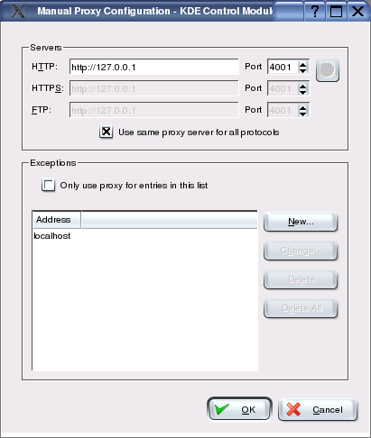

Settings for Various Browsers
JAP Setup for Konqueror
To set up JAP for Konqueror, do the following steps:
1.) From the menu "Settings" choose the submenu "Configure Konqueror...". In the new window that appears, choose the category "Proxy".

2.) Under the "Proxy" tab, choose the bullet point "Manually specified settings".
3.) Now the proxy server needs to be set. Click on the "Setup" button next to "Manually specified settings". Under "HTTP", enter the server address "http://127.0.0.1" and the port "4001". Then select the "Use same proxy server for all protocols" checkbox to use JAP for all other protocols as well.

Note: If you set a different listener port in JAP, you'll have to enter this port here too, rather than 4001.